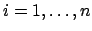
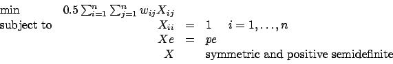
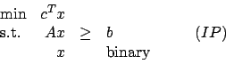
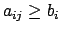

Due: Friday, April 20, 2007.
- 1.
- Given a complete graph G=(V,E) with edge weights we and n=kp nodes,
we wish to partition the vertices into
k sets each containing exactly p vertices so as to minimize the sum of the edge weights of the edges with endpoints in the same set.
Let e denote the n-vector of ones and let wii=0 for .
Show that the following semidefinite program gives a lower bound
on the optimal value of this problem, where X is an n x n matrix:

- 2.
- Define a greedy algorithm for the weighted node packing problem.
How does your algorithm do on the instance given in Figure 9.1 on page 343 of the text?
- 3.
- How would you modify your algorithm of question 2
to construct a GRASP routine for weighted node packing?
Give five sample packings found by your algorithm for the
instance given in Figure 9.1 on page 343 of the text.
- 4.
- Describe a tabu search algorithm for weighted node packing.
Be sure to define your valid solutions, your neighbourhoods,
your tabu criteria,
and what you would do with violated constraints.
Run your algorithm on the instance given in Figure 9.1 on page 343 of the text,
starting from the solution you found in Question 2
and running until the algorithm finds three more local minima.
- 5.
- We have an integer program of the form

where b>0 and c>0, and each nonzero element aij of A satisfies
.
- (a)
- Show that the optimal solution to the LP relaxation of (IP)
can be used to find a feasible integer solution.
- (b)
- Let p be the maximum number of nonzeroes in any row of A.
Give a polynomial time algorithm to find a feasible integer
solution that has value within a factor of p of the optimal value.
| John Mitchell |
| Amos Eaton 325 |
| x6915. |
| |
| Office hours:
Tuesday 2pm - 3pm, Wednesday 11am - noon. |
John E. Mitchell
2007-04-17